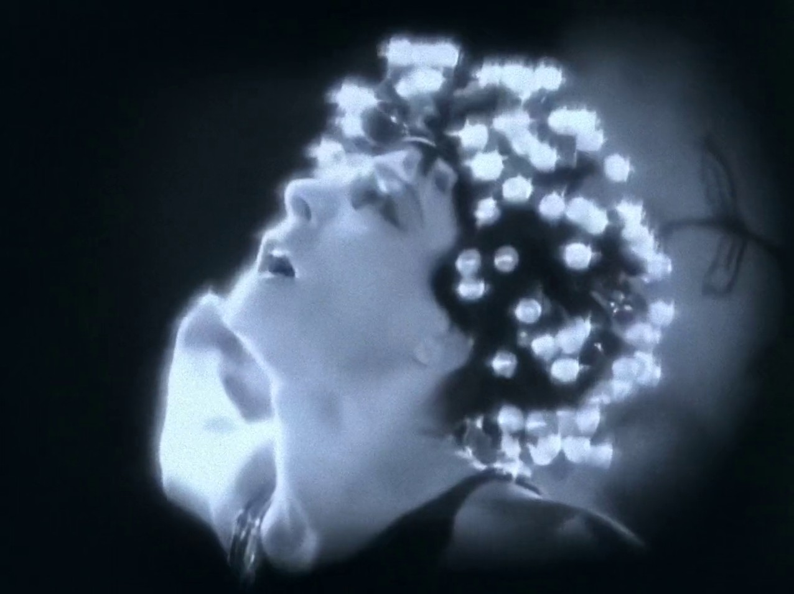

Salomé, frame at 32:09
Charles Bryant and Alla Nazimova · 1922 · Silent film, tinted in this copy (frame)
Free to use
Alla Nazimova paid for the film herself, at a cost of 350,000 to 400,000 dollars, and wrote the screenplay under the pseudonym Peter M. Winters. She was forty-two and played the princess as a fourteen-year-old. The costumes and headdresses were made by Natacha Rambova, who, like Nazimova, cited Aubrey Beardsley as the inspiration, and all the fabric was imported from Maison Lewis in Paris.